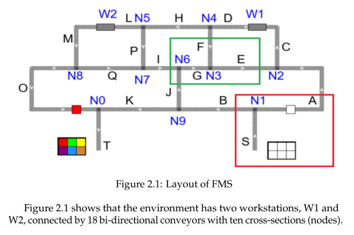
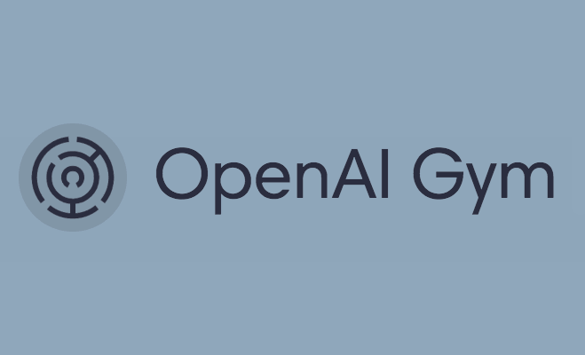
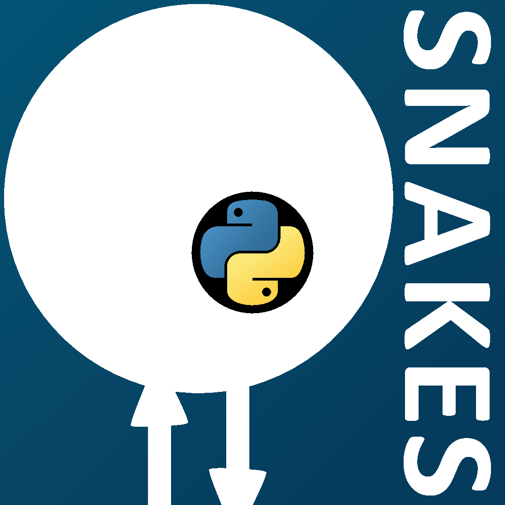

Reinforcement Learning for Flexible Manufacturing Systems Routing
A deep dive into optimizing industrial routing using PPO-based reinforcement learning

Ever wondered how factories could optimize material flow? During my research at Technische Hochschule Ostwestfalen-Lippe, I tackled this challenge in Flexible Manufacturing Systems (FMS) using advanced Reinforcement Learning (RL) techniques. This project explores how an AI agent can learn to make smarter routing decisions, significantly reducing delays and boosting efficiency. Let's dive into how it was done!
The core of this work involved creating a sophisticated simulation of an FMS and training an RL agent, specifically using the Proximal Policy Optimization (PPO) algorithm, to navigate this complex environment. The goal was not just to find a single optimal path, but to develop an adaptive agent capable of handling various production scenarios and order sizes, a concept explored through joint learning techniques. This page details the methodology, key findings, and the promising results achieved in enhancing operational efficiency. If this text were much longer, you would see it continue below the image, using the full width of this container once it clears the floated image's height.
Technologies Used






Understanding Flexible Manufacturing Systems (FMS) & Its Core Challenge
A Flexible Manufacturing System (FMS) is a sophisticated production setup designed to combine the efficiency of high-volume production lines with the adaptability of a job shop. This allows factories to simultaneously produce a mid-volume and mid-variety of products. Think of it as a highly automated system where workstations, material handling (like conveyors and AGVs), and computer control systems work in concert. While offering incredible flexibility, designing and managing an FMS, particularly its intricate material handling processes, presents significant operational challenges. The routing of materials between different workstations is crucial for maintaining efficiency.
A critical pain point within these systems, and the primary challenge this research addresses, is the inefficiency inherent in material handling. Materials can spend up to 80% of their total time on the shop floor either in transit or waiting for the next operation. These are non-value-added activities that lead to reduced throughput, decreased overall efficiency, and ultimately, lower profitability. My work focused on optimizing routing decisions within the FMS to minimize this wasted time and thereby enhance the overall production flow.
Challenge Addressed: Tackling the ~80% non-value-added time in FMS material handling.
The Approach: Reinforcement Learning for Smart Routing

To address this complex routing optimization problem, I turned to Reinforcement Learning (RL), an area of Artificial Intelligence where an 'agent' learns to make optimal decisions by interacting with an environment and receiving rewards or penalties for its actions. The chosen algorithm was Proximal Policy Optimization (PPO), a state-of-the-art policy gradient method known for its stability and performance in challenging scenarios. The core idea was to train an RL agent that could dynamically decide the best path for each material based on the current state of the FMS.
This involves the agent observing the system's state (St), taking an action (at), and receiving feedback (reward rt+1) based on how that action contributes to the overall goal of minimizing production time. The entire process operates under the Markov Decision Process (MDP) assumption, meaning the current state holds all relevant information from past states and actions. The first crucial step in this research was to create a detailed and interactive simulated FMS environment where this learning could effectively take place.
Simulating the FMS: The Petri-Net Environment

To create a realistic and manageable simulation of the Flexible Manufacturing System for the RL agent, I utilized Petri-nets – a powerful graphical and mathematical modeling tool well-suited for systems with concurrent and asynchronous operations. In my model, 'places' (circles) represent system states or specific locations like points on a conveyor or workstations. 'Transitions' (bars/rectangles) signify events or actions, such as moving a part, while 'tokens' (dots) represent the materials or pallets flowing through the FMS. The image here illustrates a segment of this model, showing how multiple conveyors (labeled E, F, and G) interconnect at a decision node (N3), allowing tokens to be routed dynamically.
The complete simulated FMS comprised two main workstations (W1 and W2) linked by a network of 18 bi-directional conveyors and ten such decision nodes, capable of processing up to 15 distinct product types. This entire environment was implemented in Python using the "Snakes" library. To foster robust learning and adaptability in the RL agent, four different versions of this FMS environment (Environments A, B, C, and D) were developed. These versions introduced variations in job initialization logic, system capacity constraints, and randomness in material arrivals, pushing the agent to generalize its routing strategies through a joint learning approach.
Training the AI: The Learning Process & Strategy
The core of the training process involved teaching the Reinforcement Learning agent, powered by the Proximal Policy Optimization (PPO) algorithm, to make optimal routing decisions within the simulated FMS environments. This was achieved by carefully defining how the agent perceives its environment and how it's rewarded for its actions.
Agent's Perception and Actions
The agent operated within a discrete action space, allowing it to choose one of four primary actions at any decision point: move up, right, down, or left. To prevent the agent from selecting impossible moves (e.g., moving into a non-existent path or a blocked conveyor), a technique called "action masking" was employed. This effectively guided the agent by only presenting valid actions based on the current state of the FMS.
The agent's "observation" of the environment at each time step was comprehensive. It included a state vector detailing the occupancy of all 63 places in the Petri-net model, specific attributes of the material (token) currently being routed (such as its current processing status, final destination/recipe, and movement count), and the action mask indicating permissible moves. This rich set of information allowed the agent to make informed decisions.
Reward Mechanism and Joint Learning
A meticulously constructed reward function was crucial for guiding the agent's learning. The function was designed to penalize inefficient actions, such as excessive movement (tracked by a 'count' variable), errors like attempting to move a token to an already occupied place, or an object taking too long to complete its processing. Conversely, the agent received positive rewards for successfully processing and terminating an object, with a significant global reward upon the successful completion of all objects in a given order. This reward structure incentivized the agent to find the most efficient routes.
To ensure the agent was robust and could generalize across different manufacturing scenarios, a "joint learning" strategy was adopted. This involved training a single RL policy simultaneously across the four different FMS environment versions (A, B, C, and D), each presenting unique challenges in terms of job initialization and system capacity. The training was performed for 100 iterations, with each iteration involving 4000 simulation time steps distributed across 32 parallel workers on an Nvidia DGX server. The performance was analyzed by monitoring the cumulative reward and the mean episode completion time.

Key Results: Demonstrating Efficiency Gains
The performance of the trained Reinforcement Learning agents was rigorously evaluated. A key comparison was made between a "Normal Agent" (trained on a single FMS configuration, specifically an order size of 6 objects in Environment A) and the "Meta-Agent" (trained using the joint learning approach across all four FMS environment versions with an order size of 8 objects).
Normal Agent vs. Meta-Agent Performance
The Normal Agent, while performing adequately on its specific training configuration (6 objects), showed poor generalization when tested on different order sizes (e.g., 4 objects). This highlighted the necessity for a more adaptive approach.
The Meta-Agent, benefiting from joint learning, demonstrated significantly better performance and adaptability. For instance, when evaluating on an order of 6 objects, the Meta-Agent achieved an average completion time of approximately 4.09 seconds per object, compared to the Normal Agent's 5.7 seconds per object. For an order of 4 objects, the Meta-Agent averaged 3.53 seconds per object, while the Normal Agent struggled at 11.6 seconds per object. The Meta-Agent also performed well on larger order sizes, like 20 and 63 objects, maintaining an average completion time close to 3.5 to 3.96 seconds per object.

Across all tested configurations with the Meta-Agent, the average production time for a single object was approximately 3.78 seconds (which translates to 37.8 simulation steps). Considering the optimal theoretical number of steps for a single object is 31, this result is quite promising, especially given the complexity of managing multiple objects simultaneously within the dynamic FMS environment.
Meta-Agent Performance Across Different Job Recipes
The Meta-Agent's effectiveness was also evaluated across all 15 different job recipes (product types) for an order size of 8 objects. The average completion time per episode for these specific job types ranged from approximately 26.74 to 33.32 seconds, demonstrating consistent performance regardless of the product's specific processing requirements. This further underscores the agent's ability to generalize its learned routing policies.

Limitations and Future Directions
While the Proximal Policy Optimization (PPO) algorithm, combined with joint learning, yielded promising results in optimizing the FMS routing problem, certain limitations inherent to the approach were noted. PPO is an online policy learning algorithm, meaning it primarily learns from the current set of experiences and policies without an explicit mechanism to store and recall extensive past experiences. This characteristic can sometimes make it challenging for the agent to consistently converge to the global optimum, especially given the stochastic nature and variability of the FMS environments it interacts with. The agent's performance, while good, could potentially be further improved.
Looking ahead, several avenues could be explored to build upon this research. One promising direction is the implementation of more advanced meta-Reinforcement Learning algorithms, such as Model-Agnostic Meta-Learning (MAML). MAML is designed to train an agent that can quickly adapt to new tasks or variations with minimal additional experience. Another potential enhancement involves exploring hierarchical multi-agent learning architectures. Such a system could feature a global model that learns overarching strategies from various local models, each specializing in specific aspects of the FMS or different environment configurations. This could potentially lead to even more robust and adaptive routing solutions.
Conclusion: Key Achievements and Impact
This research successfully presented and validated an advanced Reinforcement Learning architecture, specifically utilizing Proximal Policy Optimization (PPO) with a joint learning strategy, to effectively optimize the complex material handling processes within a Flexible Manufacturing System. It was demonstrated that an RL agent trained with this approach could significantly improve operational efficiency by intelligently routing materials.
The key outcome was the development of a "Meta-Agent" capable of generalizing its learned policies across various FMS configurations and product order sizes, a notable improvement over agents trained on single, fixed scenarios. The Meta-Agent achieved an average production time for a single object of approximately 3.78 seconds (37.8 simulation steps). This performance is commendably close to the theoretical optimal of 31 steps, especially considering the dynamic and simultaneous movement of multiple objects within the system. This project underscores the potential of applying sophisticated AI techniques like deep RL to solve tangible, real-world industrial challenges, paving the way for more adaptive and efficient manufacturing operations.
“The best way to predict the future is to create it.”